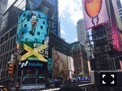

| 2017/05 08 Mon | 中元日芽香 ひめたん-0o0-その704 |
第一形態:ツインテール
第二形態:ツインテールしない
第三形態:ツインテール気が向いたらする
てことで気が向いたのでしました
専らノリで生きてます～～
名古屋個別握手会
ありがとうございました！
最近こーゆー格好が好きです
なんていうんだろう、
ガーリーでもエスニックでもない感じ。
握手も自分のペースで
楽しんでさせていただいてますo(^o^)o
ファンの皆さんに
元気な姿見てもらえて嬉しいです！
名古屋なんて一番久々だものね。
待っててくれて本当にありがとう。
私のために泣いて下さる方までいて
貰っちゃいそうになりました。
日曜の夜は、らじらー！サンデー
能條愛未ちゃん・伊藤かりんちゃんを
ゲストにお迎えしました(^o^)
「ごめんね、スムージー」は
いかがでしたか？感想聞かせて下さい！
大型連休最後ということで
みんなでわちゃわちゃやりました。
めちゃ楽しかった。ずっと笑ってた。
曲紹介も人生deゲームもまたやりたい！
そして二人にはまた遊びに来てほしい！
母と妹とNYに行ってきました！
私インドアだから
全然旅行とか惹かれないんだけれど
母が無理矢理連れ出してくれました。
休業中に気分転換に行こうって
言ってたのだけれど
予定より早く復帰したもので。
ショッピングとか
ミュージカル鑑賞とか観光とか
色々したんだけれど
一番楽しかったのは
アポロシアターのアマチュアナイト！！
純粋に歌やパフォーマンスが好きな方が
集まるステージで、会場の雰囲気とか
もう全部全部日本と違って新鮮で。
私が全てだと思ってる世界は
まだまだ小さいんだなって思いました。
例えば自分のコンプレックスを
魅力と捉えてくれる場所もあるんだとか。
言葉がわからなくても
伝えよう、聞こうとする気持ちがあれば
なんとかなるんだなとか。
笑顔は万国共通だなとか
赤ちゃんはどこの子も可愛いなとか。

プライベートでは初海外！
素敵な思い出・経験ができました
またお仕事も頑張ろうって気持ちです(^o^)
望日香と一緒に
国内のペンションとかも惹かれるな～
ちょっと旅行好きになった♡
～お知らせ～
雑誌
5/15 EX大衆6月号
6/6 漫画アクション
リリース
5/24 乃木坂46 3rdアルバム
「生まれてから初めて見た夢」
(＊´・ω・＊)